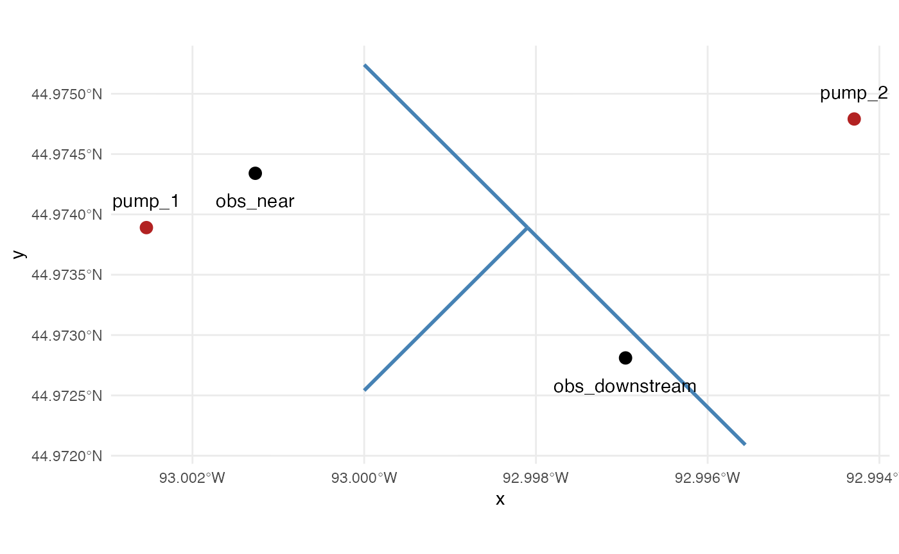
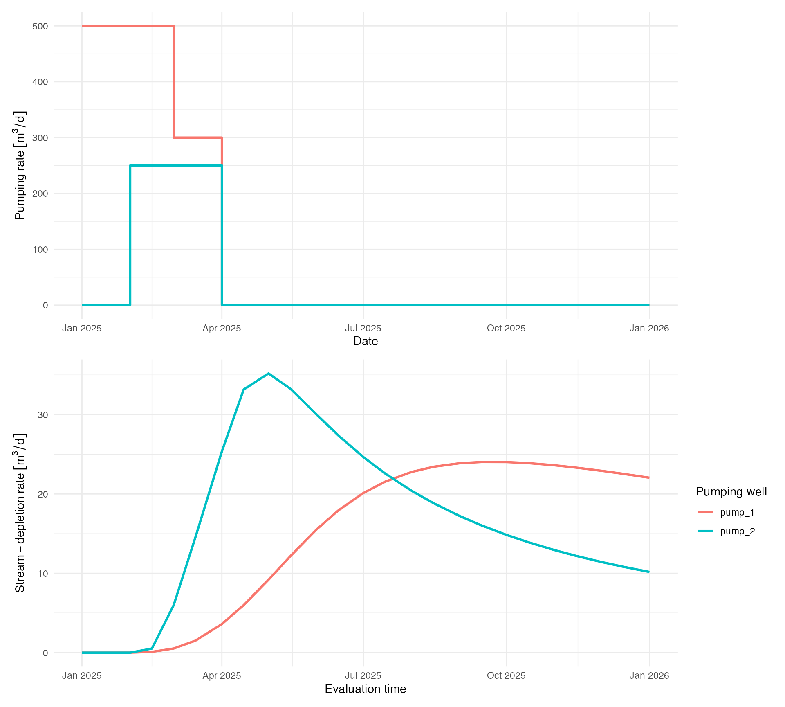

Stream Depletion Apportionment
stream-depletion-apportionment.Rmd
library(isw)
#> Loading required package: expint
#> Loading required package: units
#> udunits database from /Library/Frameworks/R.framework/Versions/4.6/Resources/library/units/share/udunits/udunits2.xmlIntroduction
This vignette presents the workflow for distributing pumping-induced stream depletion across a stream network and estimating the associated aquifer drawdown. It uses synthetic spatial inputs included with isw so the example can focus on the package workflow.
For a step-by-step treatment of spatial preparation, stream discretization, sampling, pumping events, and the analytical response calculation, see vignette("stream-depletion-apportionment-internals").
For a shared workflow comparing this ADF method with the endpoint-collocated constant-head method, see vignette("stream-injection-methods").
Load the example spatial inputs
The package includes example spatial objects with two pumping wells (example_pumping_wells), three connected stream reaches (example_stream_reaches), and two observation wells (example_observation_wells). Pumping wells carry aquifer parameters (hydraulic conductivity, aquifer thickness, and drainable porosity) used by the analytical response functions.
pumping_wells <- example_pumping_wells
stream_reaches <- example_stream_reaches
observation_wells <- example_observation_wells
ggplot() +
geom_sf(data = stream_reaches, color = "steelblue", linewidth = 1) +
geom_sf(data = pumping_wells, color = "firebrick", size = 3) +
geom_sf(data = observation_wells, color = "black", size = 3) +
geom_sf_text(data = pumping_wells, aes(label = pump_id), nudge_y = 100) +
geom_sf_text(
data = observation_wells,
aes(label = observation_id),
nudge_y = -100
) +
theme_minimal()
The package requires a unique pump_id for each pumping well and a unique observation_id for each observation well. The pumping_wells object also contains aquifer parameters. Note that the tibble includes units for K and D. An optional column well_diam can be specified, such that aquifer drawdown inside the pumping well radius (well_diam/2) is equivalent to the estimated aquifer drawdown at the edge of the well.
pumping_wells
#> Simple feature collection with 2 features and 5 fields
#> Geometry type: POINT
#> Dimension: XY
#> Bounding box: xmin: 499006 ymin: 4980000 xmax: 500350 ymax: 4980120
#> Projected CRS: WGS 84 / UTM zone 15N
#> # A tibble: 2 × 6
#> pump_id K D V well_diam geometry
#> * <chr> [m/s] [m] <dbl> [m] <POINT [m]>
#> 1 pump_1 0.00001 50 0.1 0.3 (499006 4980000)
#> 2 pump_2 0.0000075 40 0.12 0.3 (500350 4980120)The package also requires a unique reach_id for each feature in stream_reaches. The package generates reach_segment_id values when it discretizes those features.
stream_reaches
#> Simple feature collection with 3 features and 1 field
#> Geometry type: LINESTRING
#> Dimension: XY
#> Bounding box: xmin: 499500 ymin: 4979500 xmax: 501080 ymax: 4980500
#> Projected CRS: WGS 84 / UTM zone 15N
#> reach_id geometry
#> 1 upstream_1 LINESTRING (499500 4980500,...
#> 2 upstream_2 LINESTRING (499500 4979500,...
#> 3 downstream LINESTRING (5e+05 4980000, ...Define pumping schedules and evaluation times
Pumping timeseries are supplied to the model using pumping schedules. This should be a tibble provided in wide format. The first column, t, represents the start of a new pumping period for the row. All other columns should have names that match the pump_id values in the pumping_wells object. A schedule row therefore describes the rate applied by every modeled pump from that time until the next schedule change (i.e., the next row).
Evaluation times are separate from schedule times. They determine when model results are returned, without requiring pumping rates to change at every evaluation. This example requests results on the 1st and 15th of each month, plus January 1, 2026 as the year-end boundary. This shows the post-shutdown response across the full year without adding unnecessary intermediate points.
The rates in the final schedule row continue indefinitely. To represent a shutdown, include a final row that sets the applicable pumping rates to zero, as this example does on 2025-04-01.
pumping_schedules <- tibble(
t = as.Date(c("2025-01-01", "2025-02-01", "2025-03-01", "2025-04-01")),
pump_1 = set_units(c(500, 500, 300, 0), "m^3/day"),
pump_2 = set_units(c(0, 250, 250, 0), "m^3/day")
)
month_starts <- seq.Date(
from = as.Date("2025-01-01"),
to = as.Date("2025-12-01"),
by = "month"
)
evaluation_times <- sort(c(
month_starts,
month_starts + 14,
as.Date("2026-01-01")
))
pumping_schedules
#> # A tibble: 4 × 3
#> t pump_1 pump_2
#> <date> [m^3/d] [m^3/d]
#> 1 2025-01-01 500 0
#> 2 2025-02-01 500 250
#> 3 2025-03-01 300 250
#> 4 2025-04-01 0 0Apportioning depletion among stream reaches
The ADF approach involves apportioning stream depletion to each reach of the river. get_stream_segments() first transforms the stream to a projected analysis CRS and divides each reach into modeled segments no longer than reach_spacing. get_adf_stream_apportionment() then represents the detailed geometry of each segment with points separated by at most sample_spacing.
A smaller reach_spacing creates more computational segments, increasing spatial resolution, output size, and computational burden. A smaller sample_spacing improves the approximation of distance-based weighting along curved segments without increasing the number of segments returned.
The web-squared method weights the sampled stream lengths by inverse squared distance from each pump. These weights are summed by reach segment and normalized independently for every pumping well. The result also stores the shortest pump-to-segment distance used by the time-dependent analytical stream-depletion calculation.
Compared with method = "web", method = "web_squared" concentrates more of the allocation near each pump. The optional maximum_distance excludes sample points beyond a specified distance from the pump.
stream_segments <- get_stream_segments(
stream_reaches,
reach_spacing = set_units(400, "m")
)
stream_apportionment <- get_adf_stream_apportionment(
pumping_wells,
stream_segments,
sample_spacing = set_units(100, "m"),
method = "web_squared"
)
stream_apportionment[c(
"pump_id",
"reach_id",
"reach_segment_id",
"pump_to_reach_distance",
"apportionment_fraction"
)]
#> Simple feature collection with 14 features and 5 fields
#> Geometry type: LINESTRING
#> Dimension: XY
#> Bounding box: xmin: 499500 ymin: 4979500 xmax: 501080 ymax: 4980500
#> Projected CRS: WGS 84 / UTM zone 15N
#> First 10 features:
#> pump_id reach_id reach_segment_id pump_to_reach_distance
#> 1 pump_1 upstream_1 upstream_1_segment_1 702.8641 [m]
#> 2 pump_1 upstream_1 upstream_1_segment_2 784.8796 [m]
#> 3 pump_1 upstream_2 upstream_2_segment_1 702.8641 [m]
#> 4 pump_1 upstream_2 upstream_2_segment_2 784.8796 [m]
#> 5 pump_1 downstream downstream_segment_1 994.0000 [m]
#> 6 pump_1 downstream downstream_segment_2 1359.3072 [m]
#> 7 pump_1 downstream downstream_segment_3 1730.7212 [m]
#> 8 pump_2 upstream_1 upstream_1_segment_1 613.9218 [m]
#> 9 pump_2 upstream_1 upstream_1_segment_2 370.0000 [m]
#> 10 pump_2 upstream_2 upstream_2_segment_1 704.9113 [m]
#> apportionment_fraction geometry
#> 1 0.23772398 LINESTRING (499500 4980500,...
#> 2 0.16472304 LINESTRING (499750 4980250,...
#> 3 0.23772398 LINESTRING (499500 4979500,...
#> 4 0.16472304 LINESTRING (499750 4979750,...
#> 5 0.10031238 LINESTRING (5e+05 4980000, ...
#> 6 0.05759761 LINESTRING (500360 4979880,...
#> 7 0.03719597 LINESTRING (500720 4979760,...
#> 8 0.04428663 LINESTRING (499500 4980500,...
#> 9 0.11635523 LINESTRING (499750 4980250,...
#> 10 0.03392300 LINESTRING (499500 4979500,...Because each pump is apportioned separately, its fractions sum to one across the complete network.
stream_apportionment |>
st_drop_geometry() |>
group_by(pump_id) |>
summarize(
total_apportionment_fraction = sum(apportionment_fraction),
.groups = "drop"
)
#> # A tibble: 2 × 2
#> pump_id total_apportionment_fraction
#> <chr> <dbl>
#> 1 pump_1 1
#> 2 pump_2 1
ggplot(stream_apportionment) +
geom_sf(aes(color = apportionment_fraction), linewidth = 2) +
geom_sf(data = pumping_wells, color = "firebrick", size = 2.5) +
facet_wrap(~pump_id) +
labs(color = "Apportionment\nfraction") +
theme_minimal()
Calculate apportioned stream depletion
get_adf_stream_depletion() converts each pumping schedule into nonzero changes in pumping rate and pairs those changes with later evaluation times. It evaluates the Glover response only for unique combinations of pump, reach segment, and elapsed time. Each event response is multiplied by the static reach apportionment fraction, and responses from all earlier pumping events are combined by superposition.
The returned values remain separated by pump and reach segment. This preserves the provenance of each contribution before totals are calculated.
stream_depletion <- get_adf_stream_depletion(
pumping_wells,
pumping_schedules,
stream_apportionment,
evaluation_times
)
stream_depletion
#> # A tibble: 350 × 5
#> pump_id evaluation_time reach_id reach_segment_id stream_depletion_rate
#> <chr> <date> <chr> <chr> [m^3/d]
#> 1 pump_1 2025-01-01 upstream_1 upstream_1_segment_1 0
#> 2 pump_1 2025-01-01 upstream_1 upstream_1_segment_2 0
#> 3 pump_1 2025-01-01 upstream_2 upstream_2_segment_1 0
#> 4 pump_1 2025-01-01 upstream_2 upstream_2_segment_2 0
#> 5 pump_1 2025-01-01 downstream downstream_segment_1 0
#> 6 pump_1 2025-01-01 downstream downstream_segment_2 0
#> 7 pump_1 2025-01-01 downstream downstream_segment_3 0
#> 8 pump_1 2025-01-15 upstream_1 upstream_1_segment_1 1.96e- 8
#> 9 pump_1 2025-01-15 upstream_1 upstream_1_segment_2 7.89e-11
#> 10 pump_1 2025-01-15 upstream_2 upstream_2_segment_1 1.96e- 8
#> # ℹ 340 more rowsTotal depletion can be summarized either by pump or across the complete stream network. Here it is summed across reach segments while retaining each pump.
total_stream_depletion <- stream_depletion |>
group_by(pump_id, evaluation_time) |>
summarize(
stream_depletion_rate = sum(stream_depletion_rate),
.groups = "drop"
)
total_stream_depletion
#> # A tibble: 50 × 3
#> pump_id evaluation_time stream_depletion_rate
#> <chr> <date> [m^3/d]
#> 1 pump_1 2025-01-01 0
#> 2 pump_1 2025-01-15 0.0000000394
#> 3 pump_1 2025-02-01 0.00443
#> 4 pump_1 2025-02-15 0.0980
#> 5 pump_1 2025-03-01 0.524
#> 6 pump_1 2025-03-15 1.52
#> 7 pump_1 2025-04-01 3.61
#> 8 pump_1 2025-04-15 5.99
#> 9 pump_1 2025-05-01 9.19
#> 10 pump_1 2025-05-15 12.2
#> # ℹ 40 more rowsThe summarized table contains one total stream-depletion rate for each pump and evaluation time. The following figure places the pumping schedule above that depletion response over the same annual horizon. The final zero-rate schedule row is extended through the last evaluation time to make the shutdown period explicit in the upper panel.
annual_pumping_schedule <- bind_rows(
pumping_schedules,
pumping_schedules[nrow(pumping_schedules), ] |>
mutate(t = max(evaluation_times))
) |>
distinct(t, .keep_all = TRUE) |>
tidyr::pivot_longer(
cols = -t,
names_to = "pump_id",
values_to = "pumping_rate"
)
pumping_schedule_plot <- ggplot(
annual_pumping_schedule,
aes(t, pumping_rate, color = pump_id)
) +
geom_step(linewidth = 1) +
labs(
x = "Date",
y = "Pumping rate",
color = "Pumping well"
) +
theme_minimal() +
theme(legend.position = "none")
stream_depletion_plot <- ggplot(
total_stream_depletion,
aes(evaluation_time, stream_depletion_rate, color = pump_id)
) +
geom_line(linewidth = 1) +
labs(
x = "Evaluation time",
y = "Stream-depletion rate",
color = "Pumping well"
) +
theme_minimal()
patchwork::wrap_plots(
pumping_schedule_plot,
stream_depletion_plot,
ncol = 1
)
Generate the stream-injection schedule for ADF drawdown
Aquifer recovery from stream depletion is represented by injection at each reach segment’s model point. get_stream_injection_schedule() evaluates depletion at the boundaries of each pumping interval and uses the negative arithmetic mean of the two endpoint rates as a piecewise-constant injection rate. Optional injection times can add temporal resolution without changing the requested output times.
We can let the aquifer-drawdown function construct this schedule internally. It is exposed so it can be inspected, refined, or reused.
For the drawdown calculation, each point’s effective injection-well diameter is half its segment’s actual represented_length. The response is capped inside the well radius, one quarter of the segment length, preventing a point-source singularity at the stream.
stream_injection_schedule <- get_stream_injection_schedule(
pumping_wells,
pumping_schedules,
stream_segments,
evaluation_times,
method = "adf",
stream_apportionment = stream_apportionment
)
head(stream_injection_schedule)
#> # A tibble: 6 × 6
#> pump_id reach_id reach_segment_id interval_start interval_end injection_rate
#> <chr> <chr> <chr> <date> <date> [m^3/d]
#> 1 pump_1 upstream_1 upstream_1_segm… 2025-01-01 2025-01-15 -9.81e-9
#> 2 pump_1 upstream_1 upstream_1_segm… 2025-01-15 2025-02-01 -1.04e-3
#> 3 pump_1 upstream_1 upstream_1_segm… 2025-02-01 2025-02-15 -2.27e-2
#> 4 pump_1 upstream_1 upstream_1_segm… 2025-02-15 2025-03-01 -1.32e-1
#> 5 pump_1 upstream_1 upstream_1_segm… 2025-03-01 2025-03-15 -4.15e-1
#> 6 pump_1 upstream_1 upstream_1_segm… 2025-03-15 2025-04-01 -1.00e+0Estimate aquifer drawdown and stream recovery
get_aquifer_water_level_change() superimposes two sets of Theis responses. Physical pumping wells produce positive drawdown at every observation well, while the segment injection wells produce positive stream recovery. water_level_change is negative when pumping lowers the water level and positive when stream recovery raises it.
The calculation remains separated by originating pump, observation well, and evaluation time. Supplying the schedule calculated above avoids repeating the stream-depletion calculation and uses exactly the inspected injection grid.
water_level_changes <- get_aquifer_water_level_change(
pumping_wells,
pumping_schedules,
observation_wells,
stream_segments,
evaluation_times,
stream_injection_schedule = stream_injection_schedule
)
water_level_changes
#> # A tibble: 100 × 6
#> pump_id observation_id evaluation_time pumping_drawdown stream_recovery
#> <chr> <chr> <date> [m] [m]
#> 1 pump_1 obs_near 2025-01-01 0 0
#> 2 pump_1 obs_near 2025-01-15 0.0000626 1.53e-16
#> 3 pump_1 obs_near 2025-02-01 0.00751 1.01e-10
#> 4 pump_1 obs_near 2025-02-15 0.0290 5.86e- 9
#> 5 pump_1 obs_near 2025-03-01 0.0620 9.69e- 8
#> 6 pump_1 obs_near 2025-03-15 0.102 8.60e- 7
#> 7 pump_1 obs_near 2025-04-01 0.152 6.09e- 6
#> 8 pump_1 obs_near 2025-04-15 0.189 2.09e- 5
#> 9 pump_1 obs_near 2025-05-01 0.221 6.19e- 5
#> 10 pump_1 obs_near 2025-05-15 0.237 1.32e- 4
#> # ℹ 90 more rows
#> # ℹ 1 more variable: water_level_change [m]
water_level_changes |>
mutate(
pumping_water_level_change = -pumping_drawdown
) |>
tidyr::pivot_longer(
cols = c(
pumping_water_level_change,
stream_recovery,
water_level_change
),
names_to = "component",
values_to = "water_level"
) |>
ggplot(aes(
evaluation_time,
water_level,
color = component,
linetype = component
)) +
geom_line(linewidth = 0.9) +
scale_linetype_manual(values = c(
pumping_water_level_change = "dashed",
stream_recovery = "dashed",
water_level_change = "solid"
)) +
facet_grid(observation_id ~ pump_id) +
labs(
x = "Evaluation time",
y = "Water-level change",
color = "Component",
linetype = "Component"
) +
theme_minimal()